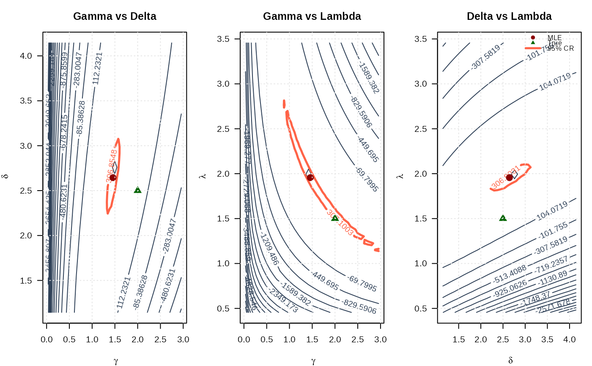
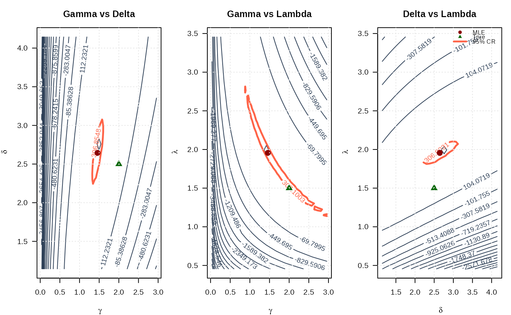

Negative Log-Likelihood for the McDonald (Mc)/Beta Power Distribution
Source:R/RcppExports.R
llmc.RdComputes the negative log-likelihood function for the McDonald (Mc)
distribution (also known as Beta Power) with parameters gamma
(\(\gamma\)), delta (\(\delta\)), and lambda (\(\lambda\)),
given a vector of observations. This distribution is the special case of the
Generalized Kumaraswamy (GKw) distribution where \(\alpha = 1\) and
\(\beta = 1\). This function is suitable for maximum likelihood estimation.
Value
Returns a single double value representing the negative
log-likelihood (\(-\ell(\theta|\mathbf{x})\)). Returns Inf
if any parameter values in par are invalid according to their
constraints, or if any value in data is not in the interval (0, 1).
Details
The McDonald (Mc) distribution is the GKw distribution (dmc)
with \(\alpha=1\) and \(\beta=1\). Its probability density function (PDF) is:
$$
f(x | \theta) = \frac{\lambda}{B(\gamma,\delta+1)} x^{\gamma \lambda - 1} (1 - x^\lambda)^\delta
$$
for \(0 < x < 1\), \(\theta = (\gamma, \delta, \lambda)\), and \(B(a,b)\)
is the Beta function (beta).
The log-likelihood function \(\ell(\theta | \mathbf{x})\) for a sample
\(\mathbf{x} = (x_1, \dots, x_n)\) is \(\sum_{i=1}^n \ln f(x_i | \theta)\):
$$
\ell(\theta | \mathbf{x}) = n[\ln(\lambda) - \ln B(\gamma, \delta+1)]
+ \sum_{i=1}^{n} [(\gamma\lambda - 1)\ln(x_i) + \delta\ln(1 - x_i^\lambda)]
$$
This function computes and returns the negative log-likelihood, \(-\ell(\theta|\mathbf{x})\),
suitable for minimization using optimization routines like optim.
Numerical stability is maintained, including using the log-gamma function
(lgamma) for the Beta function term.
References
McDonald, J. B. (1984). Some generalized functions for the size distribution of income. Econometrica, 52(3), 647-663.
Cordeiro, G. M., & de Castro, M. (2011). A new family of generalized distributions. Journal of Statistical Computation and Simulation,
Kumaraswamy, P. (1980). A generalized probability density function for double-bounded random processes. Journal of Hydrology, 46(1-2), 79-88.
Examples
# \donttest{
## Example 1: Basic Log-Likelihood Evaluation
par_ <- par()
# Generate sample data with more stable parameters
set.seed(123)
n <- 1000
true_params <- c(gamma = 2.0, delta = 2.5, lambda = 1.5)
data <- rmc(n, gamma = true_params[1], delta = true_params[2],
lambda = true_params[3])
# Evaluate negative log-likelihood at true parameters
nll_true <- llmc(par = true_params, data = data)
cat("Negative log-likelihood at true parameters:", nll_true, "\n")
#> Negative log-likelihood at true parameters: -309.7459
# Evaluate at different parameter values
test_params <- rbind(
c(1.5, 2.0, 1.0),
c(2.0, 2.5, 1.5),
c(2.5, 3.0, 2.0)
)
nll_values <- apply(test_params, 1, function(p) llmc(p, data))
results <- data.frame(
Gamma = test_params[, 1],
Delta = test_params[, 2],
Lambda = test_params[, 3],
NegLogLik = nll_values
)
print(results, digits = 4)
#> Gamma Delta Lambda NegLogLik
#> 1 1.5 2.0 1.0 38.79
#> 2 2.0 2.5 1.5 -309.75
#> 3 2.5 3.0 2.0 -40.96
## Example 2: Maximum Likelihood Estimation
# Optimization using BFGS with analytical gradient
fit <- optim(
par = c(1.5, 2.0, 1.0),
fn = llmc,
gr = grmc,
data = data,
method = "BFGS",
hessian = TRUE
)
mle <- fit$par
names(mle) <- c("gamma", "delta", "lambda")
se <- sqrt(diag(solve(fit$hessian)))
results <- data.frame(
Parameter = c("gamma", "delta", "lambda"),
True = true_params,
MLE = mle,
SE = se,
CI_Lower = mle - 1.96 * se,
CI_Upper = mle + 1.96 * se
)
print(results, digits = 4)
#> Parameter True MLE SE CI_Lower CI_Upper
#> gamma gamma 2.0 1.458 0.7271 0.03309 2.883
#> delta delta 2.5 2.644 0.3351 1.98760 3.301
#> lambda lambda 1.5 1.956 0.7785 0.42989 3.482
cat("\nNegative log-likelihood at MLE:", fit$value, "\n")
#>
#> Negative log-likelihood at MLE: -310.1013
cat("AIC:", 2 * fit$value + 2 * length(mle), "\n")
#> AIC: -614.2026
cat("BIC:", 2 * fit$value + length(mle) * log(n), "\n")
#> BIC: -599.4794
## Example 3: Comparing Optimization Methods
methods <- c("BFGS", "L-BFGS-B", "Nelder-Mead", "CG")
start_params <- c(1.5, 2.0, 1.0)
comparison <- data.frame(
Method = character(),
Gamma = numeric(),
Delta = numeric(),
Lambda = numeric(),
NegLogLik = numeric(),
Convergence = integer(),
stringsAsFactors = FALSE
)
for (method in methods) {
if (method %in% c("BFGS", "CG")) {
fit_temp <- optim(
par = start_params,
fn = llmc,
gr = grmc,
data = data,
method = method
)
} else if (method == "L-BFGS-B") {
fit_temp <- optim(
par = start_params,
fn = llmc,
gr = grmc,
data = data,
method = method,
lower = c(0.01, 0.01, 0.01),
upper = c(100, 100, 100)
)
} else {
fit_temp <- optim(
par = start_params,
fn = llmc,
data = data,
method = method
)
}
comparison <- rbind(comparison, data.frame(
Method = method,
Gamma = fit_temp$par[1],
Delta = fit_temp$par[2],
Lambda = fit_temp$par[3],
NegLogLik = fit_temp$value,
Convergence = fit_temp$convergence,
stringsAsFactors = FALSE
))
}
print(comparison, digits = 4, row.names = FALSE)
#> Method Gamma Delta Lambda NegLogLik Convergence
#> BFGS 1.458 2.644 1.956 -310.1 0
#> L-BFGS-B 1.460 2.644 1.954 -310.1 0
#> Nelder-Mead 1.460 2.643 1.954 -310.1 0
#> CG 1.878 2.522 1.596 -310.0 1
## Example 4: Likelihood Ratio Test
# Test H0: lambda = 1.5 vs H1: lambda free
loglik_full <- -fit$value
restricted_ll <- function(params_restricted, data, lambda_fixed) {
llmc(par = c(params_restricted[1], params_restricted[2],
lambda_fixed), data = data)
}
fit_restricted <- optim(
par = c(mle[1], mle[2]),
fn = restricted_ll,
data = data,
lambda_fixed = 1.5,
method = "BFGS"
)
loglik_restricted <- -fit_restricted$value
lr_stat <- 2 * (loglik_full - loglik_restricted)
p_value <- pchisq(lr_stat, df = 1, lower.tail = FALSE)
cat("LR Statistic:", round(lr_stat, 4), "\n")
#> LR Statistic: 0.2939
cat("P-value:", format.pval(p_value, digits = 4), "\n")
#> P-value: 0.5878
## Example 5: Univariate Profile Likelihoods
# Profile for gamma
gamma_grid <- seq(mle[1] - 1.5, mle[1] + 1.5, length.out = 50)
gamma_grid <- gamma_grid[gamma_grid > 0]
profile_ll_gamma <- numeric(length(gamma_grid))
for (i in seq_along(gamma_grid)) {
profile_fit <- optim(
par = mle[-1],
fn = function(p) llmc(c(gamma_grid[i], p), data),
method = "BFGS"
)
profile_ll_gamma[i] <- -profile_fit$value
}
# Profile for delta
delta_grid <- seq(mle[2] - 1.5, mle[2] + 1.5, length.out = 50)
delta_grid <- delta_grid[delta_grid > 0]
profile_ll_delta <- numeric(length(delta_grid))
for (i in seq_along(delta_grid)) {
profile_fit <- optim(
par = mle[-2],
fn = function(p) llmc(c(p[1], delta_grid[i], p[2]), data),
method = "BFGS"
)
profile_ll_delta[i] <- -profile_fit$value
}
# Profile for lambda
lambda_grid <- seq(mle[3] - 1.5, mle[3] + 1.5, length.out = 50)
lambda_grid <- lambda_grid[lambda_grid > 0]
profile_ll_lambda <- numeric(length(lambda_grid))
for (i in seq_along(lambda_grid)) {
profile_fit <- optim(
par = mle[-3],
fn = function(p) llmc(c(p[1], p[2], lambda_grid[i]), data),
method = "BFGS"
)
profile_ll_lambda[i] <- -profile_fit$value
}
# 95% confidence threshold
chi_crit <- qchisq(0.95, df = 1)
threshold <- max(profile_ll_gamma) - chi_crit / 2
# Plot all profiles
par(mfrow = c(1, 3), mar = c(4, 4, 3, 1))
plot(gamma_grid, profile_ll_gamma, type = "l", lwd = 2, col = "#2E4057",
xlab = expression(gamma), ylab = "Profile Log-Likelihood",
main = expression(paste("Profile: ", gamma)), las = 1)
abline(v = mle[1], col = "#8B0000", lty = 2, lwd = 2)
abline(v = true_params[1], col = "#006400", lty = 2, lwd = 2)
abline(h = threshold, col = "#808080", lty = 3, lwd = 1.5)
legend("topright", legend = c("MLE", "True", "95% CI"),
col = c("#8B0000", "#006400", "#808080"),
lty = c(2, 2, 3), lwd = 2, bty = "n", cex = 0.8)
grid(col = "gray90")
plot(delta_grid, profile_ll_delta, type = "l", lwd = 2, col = "#2E4057",
xlab = expression(delta), ylab = "Profile Log-Likelihood",
main = expression(paste("Profile: ", delta)), las = 1)
abline(v = mle[2], col = "#8B0000", lty = 2, lwd = 2)
abline(v = true_params[2], col = "#006400", lty = 2, lwd = 2)
abline(h = threshold, col = "#808080", lty = 3, lwd = 1.5)
legend("topright", legend = c("MLE", "True", "95% CI"),
col = c("#8B0000", "#006400", "#808080"),
lty = c(2, 2, 3), lwd = 2, bty = "n", cex = 0.8)
grid(col = "gray90")
plot(lambda_grid, profile_ll_lambda, type = "l", lwd = 2, col = "#2E4057",
xlab = expression(lambda), ylab = "Profile Log-Likelihood",
main = expression(paste("Profile: ", lambda)), las = 1)
abline(v = mle[3], col = "#8B0000", lty = 2, lwd = 2)
abline(v = true_params[3], col = "#006400", lty = 2, lwd = 2)
abline(h = threshold, col = "#808080", lty = 3, lwd = 1.5)
legend("topright", legend = c("MLE", "True", "95% CI"),
col = c("#8B0000", "#006400", "#808080"),
lty = c(2, 2, 3), lwd = 2, bty = "n", cex = 0.8)
grid(col = "gray90")
 par(mfrow = c(1, 1))
## Example 6: 2D Log-Likelihood Surfaces (All pairs side by side)
# Create 2D grids with wider range (±1.5)
gamma_2d <- seq(mle[1] - 1.5, mle[1] + 1.5, length.out = round(n/25))
delta_2d <- seq(mle[2] - 1.5, mle[2] + 1.5, length.out = round(n/25))
lambda_2d <- seq(mle[3] - 1.5, mle[3] + 1.5, length.out = round(n/25))
gamma_2d <- gamma_2d[gamma_2d > 0]
delta_2d <- delta_2d[delta_2d > 0]
lambda_2d <- lambda_2d[lambda_2d > 0]
# Compute all log-likelihood surfaces
ll_surface_gd <- matrix(NA, nrow = length(gamma_2d), ncol = length(delta_2d))
ll_surface_gl <- matrix(NA, nrow = length(gamma_2d), ncol = length(lambda_2d))
ll_surface_dl <- matrix(NA, nrow = length(delta_2d), ncol = length(lambda_2d))
# Gamma vs Delta
for (i in seq_along(gamma_2d)) {
for (j in seq_along(delta_2d)) {
ll_surface_gd[i, j] <- -llmc(c(gamma_2d[i], delta_2d[j], mle[3]), data)
}
}
# Gamma vs Lambda
for (i in seq_along(gamma_2d)) {
for (j in seq_along(lambda_2d)) {
ll_surface_gl[i, j] <- -llmc(c(gamma_2d[i], mle[2], lambda_2d[j]), data)
}
}
# Delta vs Lambda
for (i in seq_along(delta_2d)) {
for (j in seq_along(lambda_2d)) {
ll_surface_dl[i, j] <- -llmc(c(mle[1], delta_2d[i], lambda_2d[j]), data)
}
}
# Confidence region levels
max_ll_gd <- max(ll_surface_gd, na.rm = TRUE)
max_ll_gl <- max(ll_surface_gl, na.rm = TRUE)
max_ll_dl <- max(ll_surface_dl, na.rm = TRUE)
levels_95_gd <- max_ll_gd - qchisq(0.95, df = 2) / 2
levels_95_gl <- max_ll_gl - qchisq(0.95, df = 2) / 2
levels_95_dl <- max_ll_dl - qchisq(0.95, df = 2) / 2
# Plot all three surfaces side by side
par(mfrow = c(1, 3), mar = c(4, 4, 3, 1))
# Gamma vs Delta
contour(gamma_2d, delta_2d, ll_surface_gd,
xlab = expression(gamma), ylab = expression(delta),
main = "Gamma vs Delta", las = 1,
levels = seq(min(ll_surface_gd, na.rm = TRUE), max_ll_gd, length.out = 20),
col = "#2E4057", lwd = 1)
contour(gamma_2d, delta_2d, ll_surface_gd,
levels = levels_95_gd, col = "#FF6347", lwd = 2.5, lty = 1, add = TRUE)
points(mle[1], mle[2], pch = 19, col = "#8B0000", cex = 1.5)
points(true_params[1], true_params[2], pch = 17, col = "#006400", cex = 1.5)
grid(col = "gray90")
# Gamma vs Lambda
contour(gamma_2d, lambda_2d, ll_surface_gl,
xlab = expression(gamma), ylab = expression(lambda),
main = "Gamma vs Lambda", las = 1,
levels = seq(min(ll_surface_gl, na.rm = TRUE), max_ll_gl, length.out = 20),
col = "#2E4057", lwd = 1)
contour(gamma_2d, lambda_2d, ll_surface_gl,
levels = levels_95_gl, col = "#FF6347", lwd = 2.5, lty = 1, add = TRUE)
points(mle[1], mle[3], pch = 19, col = "#8B0000", cex = 1.5)
points(true_params[1], true_params[3], pch = 17, col = "#006400", cex = 1.5)
grid(col = "gray90")
# Delta vs Lambda
contour(delta_2d, lambda_2d, ll_surface_dl,
xlab = expression(delta), ylab = expression(lambda),
main = "Delta vs Lambda", las = 1,
levels = seq(min(ll_surface_dl, na.rm = TRUE), max_ll_dl, length.out = 20),
col = "#2E4057", lwd = 1)
contour(delta_2d, lambda_2d, ll_surface_dl,
levels = levels_95_dl, col = "#FF6347", lwd = 2.5, lty = 1, add = TRUE)
points(mle[2], mle[3], pch = 19, col = "#8B0000", cex = 1.5)
points(true_params[2], true_params[3], pch = 17, col = "#006400", cex = 1.5)
grid(col = "gray90")
legend("topright",
legend = c("MLE", "True", "95% CR"),
col = c("#8B0000", "#006400", "#FF6347"),
pch = c(19, 17, NA),
lty = c(NA, NA, 1),
lwd = c(NA, NA, 2.5),
bty = "n", cex = 0.8)

par(par_)
#> Warning: graphical parameter "cin" cannot be set
#> Warning: graphical parameter "cra" cannot be set
#> Warning: graphical parameter "csi" cannot be set
#> Warning: graphical parameter "cxy" cannot be set
#> Warning: graphical parameter "din" cannot be set
#> Warning: graphical parameter "page" cannot be set
# }
par(mfrow = c(1, 1))
## Example 6: 2D Log-Likelihood Surfaces (All pairs side by side)
# Create 2D grids with wider range (±1.5)
gamma_2d <- seq(mle[1] - 1.5, mle[1] + 1.5, length.out = round(n/25))
delta_2d <- seq(mle[2] - 1.5, mle[2] + 1.5, length.out = round(n/25))
lambda_2d <- seq(mle[3] - 1.5, mle[3] + 1.5, length.out = round(n/25))
gamma_2d <- gamma_2d[gamma_2d > 0]
delta_2d <- delta_2d[delta_2d > 0]
lambda_2d <- lambda_2d[lambda_2d > 0]
# Compute all log-likelihood surfaces
ll_surface_gd <- matrix(NA, nrow = length(gamma_2d), ncol = length(delta_2d))
ll_surface_gl <- matrix(NA, nrow = length(gamma_2d), ncol = length(lambda_2d))
ll_surface_dl <- matrix(NA, nrow = length(delta_2d), ncol = length(lambda_2d))
# Gamma vs Delta
for (i in seq_along(gamma_2d)) {
for (j in seq_along(delta_2d)) {
ll_surface_gd[i, j] <- -llmc(c(gamma_2d[i], delta_2d[j], mle[3]), data)
}
}
# Gamma vs Lambda
for (i in seq_along(gamma_2d)) {
for (j in seq_along(lambda_2d)) {
ll_surface_gl[i, j] <- -llmc(c(gamma_2d[i], mle[2], lambda_2d[j]), data)
}
}
# Delta vs Lambda
for (i in seq_along(delta_2d)) {
for (j in seq_along(lambda_2d)) {
ll_surface_dl[i, j] <- -llmc(c(mle[1], delta_2d[i], lambda_2d[j]), data)
}
}
# Confidence region levels
max_ll_gd <- max(ll_surface_gd, na.rm = TRUE)
max_ll_gl <- max(ll_surface_gl, na.rm = TRUE)
max_ll_dl <- max(ll_surface_dl, na.rm = TRUE)
levels_95_gd <- max_ll_gd - qchisq(0.95, df = 2) / 2
levels_95_gl <- max_ll_gl - qchisq(0.95, df = 2) / 2
levels_95_dl <- max_ll_dl - qchisq(0.95, df = 2) / 2
# Plot all three surfaces side by side
par(mfrow = c(1, 3), mar = c(4, 4, 3, 1))
# Gamma vs Delta
contour(gamma_2d, delta_2d, ll_surface_gd,
xlab = expression(gamma), ylab = expression(delta),
main = "Gamma vs Delta", las = 1,
levels = seq(min(ll_surface_gd, na.rm = TRUE), max_ll_gd, length.out = 20),
col = "#2E4057", lwd = 1)
contour(gamma_2d, delta_2d, ll_surface_gd,
levels = levels_95_gd, col = "#FF6347", lwd = 2.5, lty = 1, add = TRUE)
points(mle[1], mle[2], pch = 19, col = "#8B0000", cex = 1.5)
points(true_params[1], true_params[2], pch = 17, col = "#006400", cex = 1.5)
grid(col = "gray90")
# Gamma vs Lambda
contour(gamma_2d, lambda_2d, ll_surface_gl,
xlab = expression(gamma), ylab = expression(lambda),
main = "Gamma vs Lambda", las = 1,
levels = seq(min(ll_surface_gl, na.rm = TRUE), max_ll_gl, length.out = 20),
col = "#2E4057", lwd = 1)
contour(gamma_2d, lambda_2d, ll_surface_gl,
levels = levels_95_gl, col = "#FF6347", lwd = 2.5, lty = 1, add = TRUE)
points(mle[1], mle[3], pch = 19, col = "#8B0000", cex = 1.5)
points(true_params[1], true_params[3], pch = 17, col = "#006400", cex = 1.5)
grid(col = "gray90")
# Delta vs Lambda
contour(delta_2d, lambda_2d, ll_surface_dl,
xlab = expression(delta), ylab = expression(lambda),
main = "Delta vs Lambda", las = 1,
levels = seq(min(ll_surface_dl, na.rm = TRUE), max_ll_dl, length.out = 20),
col = "#2E4057", lwd = 1)
contour(delta_2d, lambda_2d, ll_surface_dl,
levels = levels_95_dl, col = "#FF6347", lwd = 2.5, lty = 1, add = TRUE)
points(mle[2], mle[3], pch = 19, col = "#8B0000", cex = 1.5)
points(true_params[2], true_params[3], pch = 17, col = "#006400", cex = 1.5)
grid(col = "gray90")
legend("topright",
legend = c("MLE", "True", "95% CR"),
col = c("#8B0000", "#006400", "#FF6347"),
pch = c(19, 17, NA),
lty = c(NA, NA, 1),
lwd = c(NA, NA, 2.5),
bty = "n", cex = 0.8)

par(par_)
#> Warning: graphical parameter "cin" cannot be set
#> Warning: graphical parameter "cra" cannot be set
#> Warning: graphical parameter "csi" cannot be set
#> Warning: graphical parameter "cxy" cannot be set
#> Warning: graphical parameter "din" cannot be set
#> Warning: graphical parameter "page" cannot be set
# }